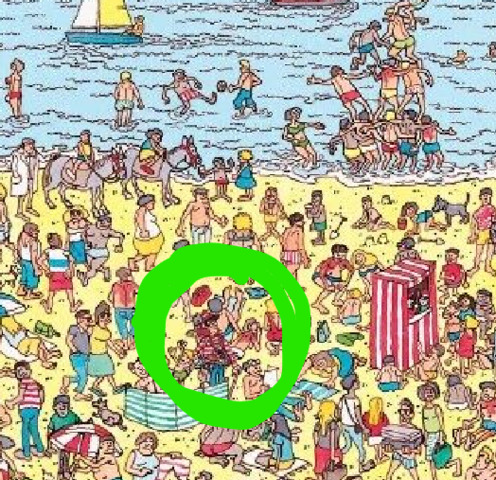

What is GIS?
Before we dive into the technical details, let's explore the fundamental question: What exactly is GIS? Is it just a tool for making maps, a rigorous science, or something more?
GIS noun : a computer system designed to capture, store, manipulate, analyze, manage, and present spatial or geographic data.
— Merriam-Webster Dictionary
While this dictionary definition captures the technical essence, it misses the bigger picture. GIS is not just a computer system—it's a way of thinking spatially, a scientific discipline, and increasingly, an art form for communicating complex information visually.
The Components of GIS
A Geographic Information System is more than just software—it's an integrated system of interconnected components working together to capture, manage, analyze, and display spatial data. This classic definition, popularized by Esri, goes beyond the dictionary definition by including People and Apps/Methods (workflows) as essential components—recognizing that technology alone doesn't make a GIS; it's the human expertise and systematic processes that transform raw data into actionable insights.
💻 Hardware
The physical equipment—computers, servers, GPS receivers, drones, and digitizers. Today this includes cloud infrastructure and mobile devices that bring GIS into the field.
🖥️ Software
The programs that provide the functions and tools for spatial analysis. This course uses ArcGIS Pro, QGIS, and Web GIS to give you fluency across platforms.
🗂️ Data
The foundation of any GIS. Data comes in two primary forms: vector (points, lines, polygons) and raster (grids of cells, like satellite imagery). Without quality data, even the best analysis fails.
📁 The Shapefile: GIS's Most Common Vector Format
When you download vector data, you'll almost always encounter the Shapefile—a format created by Esri in the 1990s that became the de facto standard for sharing GIS data. Despite its age, it remains ubiquitous.
A shapefile is actually multiple files working together
A shapefile is not a single file—it's a collection of files that must stay together:
When copying or emailing shapefiles, you must include all the associated files. If you only send the .shp file, the recipient gets geometry with no attributes and no coordinate system—useless!
While shapefiles remain common, newer formats address their limitations: GeoPackage (.gpkg) stores everything in a single file with no size limits; GeoJSON is ideal for web mapping; and File Geodatabase (.gdb) is Esri's modern proprietary format with advanced features.
👥 People
The most critical component. GIS professionals design databases, perform analysis, and interpret results. A GIS is only as good as the spatial thinking of the people operating it.
📋 Methods
The procedures and workflows that ensure consistency and reproducibility. Well-documented methods make your analysis defendable—a key theme throughout this book.
💥 A Word of Warning (and Encouragement)
GIS software will crash on you. It will freeze at 99% of a geoprocessing task. It will give you cryptic error messages like "Error 999999: Something happened." Your carefully crafted analysis will vanish because you forgot to save. This is not a bug—it's a rite of passage.
The best GIS analysts are not the ones who never encounter errors—they're the ones who don't give up. Save often. Keep notes. Laugh at the absurdity. And remember: every professional you admire has rage-quit at least once. Welcome to the club. 🎉
🤖 The Emerging 6th Component: AI Agents
As we move deeper into the 2020s, a new component is emerging in the GIS ecosystem: AI Agents. Just as "People" were recognized as essential to GIS beyond mere technology, AI Agents are becoming increasingly integrated into spatial workflows.
🌐 GeoAI Agents in Action
- Big Tech Automation: Companies like Google, Microsoft, and Esri already use AI agents to automate massive data creation tasks—from building footprint extraction to road network updates from satellite imagery.
- Research Frontiers: Geographers and GIS researchers, including Dr. Sounny, are developing specialized GeoAI Agents that can reason spatially, answer geographic questions, and assist with complex analytical workflows.
- The Future Analyst: Tomorrow's GIS professional won't just operate software—they'll collaborate with AI agents, directing them to handle repetitive tasks while focusing human expertise on interpretation and decision-making.
🌍 Asking the Questions of "Where"
When we think of GIS, we often think of simply locating things. Consider the classic game Where's Waldo?. Finding Waldo on the page is a basic GIS query: "Where is point X?". But true spatial analysis goes deeper.
GIS is a framework for understanding and managing our complex world. We take the infinite complexity of the Real World and simplify it into Geographic Knowledge (data layers like roads, forests, and elevations). We then apply tools to this knowledge to make decisions—whether it's urban planning, conservation, or business intelligence.

🥪 The GIS "Sandwich"
Think of GIS data like a sandwich. Each layer represents a different theme—roads, rivers, elevation, land use, buildings—all stacked on top of each other but sharing the same geographic space. Just like how the ingredients in a sandwich interact (cheese melts onto the meat, lettuce crunches against bread), GIS layers can be combined and analyzed to reveal relationships invisible when looking at each layer alone.
🎨 The Art of GIS
Is GIS a tool? Is it a science? This is a common debate. However, a third perspective is that GIS is an Art.

🎨 1. The Paint (Data)
Just as an artist needs pigment, a GIS analyst needs data: pixels, points, and lines that represent the raw material of reality.
🖌️ 2. The Brushes (Tools)
Buffers, overlays, and map algebra are your creative instruments. The skill lies in knowing which tool produces the desired effect.
🖼️ 3. The Canvas (Platform)
Whether it's a printed PDF or an interactive web map, this is where your creative combination of data and tools comes to life.
The Medical Analogy: Why GIS is "Not Exact"
Consider the practice of Medicine. It is often described as an "art supported by science" rather than a rigid science like Physics. Why? Because a doctor rarely has 100% certainty. They work with a mental model of the human body, imperfect data (symptoms, test results), and the unique context of the patient. Consequently, three expert physicians might look at the same patient and suggest three different, equally valid courses of treatment.
Spatial Analysis follows the same pattern.
We never work with the "real world"; we work with models of the world (our data layers). Because these models are simplifications of reality, there is inherent subjectivity in how we choose to analyze them. There is rarely a single "correct" button to press. Instead, the "Art" lies in your ability to daisy-chain simple tools together to construct a logical workflow.

The Starry Night (1889) by Vincent van Gogh. On display at the Museum of Modern Art (MoMA), New York.
The Goal: Create a Masterpiece
"This textbook is trying to get you to make masterpieces - works of art that a GIS analyst can truly appreciate. When Dr. Sounny sees good GIS, for him it is like looking at good art. Hopefully, this textbook can help make the next GIS Van Gogh."
🔬 GIS in Action: Case Studies
To illustrate the versatility of asking "Where," here are three examples of creative GIS applications across different disciplines:
1. Sustainability: Are Solar Panels Enough?
The Question: Do trendy solar installations on rooftops actually make economic and environmental sense?
The Approach: Using LiDAR (Light Detection and Ranging), we created specific "Digital Roof Models" for both University of Texas and Southwestern University. By combining slope, aspect, and tree canopy shadows (NDVI), we calculated the exact solar potential of every single rooftop. The finding? Subsidies are crucial. Without them, the "payback period" for many installs exceeded 30 years, making them environmentally friendly but not economically sustainable.
2. Physical Geography: Inverting the Landscape
The Question: Where does the Mississippi River natural levee end and the floodplain begin? And how often do they actually connect?
The Approach: Hydrology tools usually find where water flows down (drainage networks). To find the crest of natural levees (the highest points), we inverted the Digital Elevation Model (DEM)—flipping the landscape upside down. We then ran standard stream-finding algorithms on this inverted world to extract the ridges.
The Findings: This revealed that small, non-catastrophic floods connect the river to the floodplain much more often than previously thought. A discharge duration of just 10% inundates 87% of the floodplain surface, greatly exceeding official "flood stage" models. This "longitudinal connectivity" is critical for fish habitat and nutrient cycling in the embanked floodplain.
📄 Read the Research (Wiley)3. Humanities: Where is the "Southwest"?
The Question: The "Southwest" is a vernacular region—it exists in our minds, not on a legal map. Where do people think it is?
The Approach: We surveyed people and asked them to draw a polygon of "The Southwest." Using Map Algebra, we stacked all these polygons (Raster Addition). The result showed a "fuzzy" geography: a core area (AZ/NM) that everyone agreed on, and correctly fading edges. Interestingly, the region seems to be migrating westward over time compared to studies from the 1970s.
🖊️ Contribute to the Research: Draw Your SouthwestThe GIS Learning Journey
This textbook is designed as a progressive journey across six parts. Each module builds upon the previous one.
Foundations
Spatial thinking, map design, geodesy, and GNSS.
Data Creation
Georeferencing, digitizing, and database management.
Remote Sensing
Spectral analysis, imagery foundations, and LiDAR.
Spatial Analysis
Raster/Vector operations and complex spatial modeling.
Applied GIS
Field data collection, storytelling, and ethical AI.
Research
Advanced project management and research lifecycles.
Spatial Thinking Pre-Check
Test your natural spatial intuition before we begin.
🎯 Learning Objectives
Master Remote Sensing
Analyze satellite imagery to monitor environmental changes.
Spatial Analysis
Use buffering, overlay, and interpolation for problem solving.
Cartographic Design
Create professional maps that communicate clearly.
GIS Data Management
Organize, maintain, and query spatial databases for efficient workflows.
Interactive: The Data Model Decision Matrix
As a GIS professional, your first decision is often choosing the right format. Click the scenarios below to see if they should be Vector or Raster.
Interactive: Projection Distortion Viewer
Map projections always distort Earth's surface. Choose a projection to see how area and shape are affected across different latitudes, including Texas.
Texas is highlighted in orange. Notice how its shape and size change with different projections.
Web Mercator (Most Common)
Distortion: Extreme area distortion at poles. Greenland appears as large as Africa!
Use Case: Web mapping (Google Maps, OpenStreetMap). Good for navigation and equal bearing angles.
Texas Impact: Texas is slightly enlarged and shifted northward compared to equal-area projections.
Note: Tissot indicatrices (small circles) show distortion at different latitudes. Circle = no distortion; ellipse = some distortion.
Interactive: The Electromagnetic Spectrum
Remote sensing satellites "see" beyond human vision. Drag the slider to explore different wavelengths and see how different land cover types reflect energy across the spectrum.
Red Light (Visible)
650 nanometers
Detects vegetation health and shallow water. Healthy plants reflect red light.
Vegetation
8%
Water
3%
Bare Soil
15%
Interactive: AI Map Bias Detection
Modern GIS analysis uses AI to classify satellite imagery. But AI models can have hidden biases. Use this tool to identify potential failure modes in an AI land-use classification.
Threshold: 75%
⚠️ Potential Issues at 75% Confidence:
- Overfitting: Model memorizes training data and fails on new urban areas in West Texas.
- Spatial Bias: Model was trained on imagery from humid East Texas; struggles with arid West Texas vegetation patterns.
- Temporal Bias: Model trained on summer imagery; misclassifies winter-dormant vegetation.
- Annotation Bias: Training data labeled by experts unfamiliar with Texas-specific land use patterns.
🚀 Software Toolkit
Desktop & Cloud Engines
For deep analysis, you will need a robust desktop environment (ArcGIS Pro or QGIS). For planetary-scale remote sensing, we rely on Google Earth Engine. Ensure your accounts are active and ready.
WebGIS Applications
Not all GIS requires installation. throughout the book, we will use accessible web applications—like the interactive tools found at sounny.github.io—to perform quick visualizations and analyses directly in the browser.
AI-Assisted Workflows
The modern GIS analyst has a new partner: Artificial Intelligence. Today, you can use AI to write Python scripts that automate complex spatial tasks, making advanced analysis accessible to everyone. We will explore this frontier in Chapter 21: Artificial Intelligence within the "Future of GIS" section.
💡 Tips for Success
- Be Organized: Keep your files structured. Good data management is the foundation of every successful project.
- Consistency: Establish a regular practice routine.
- Hands-on: Don't skip the labs; GIS is learned by doing.
- Backups: Cloud-save your spatial data frequently.